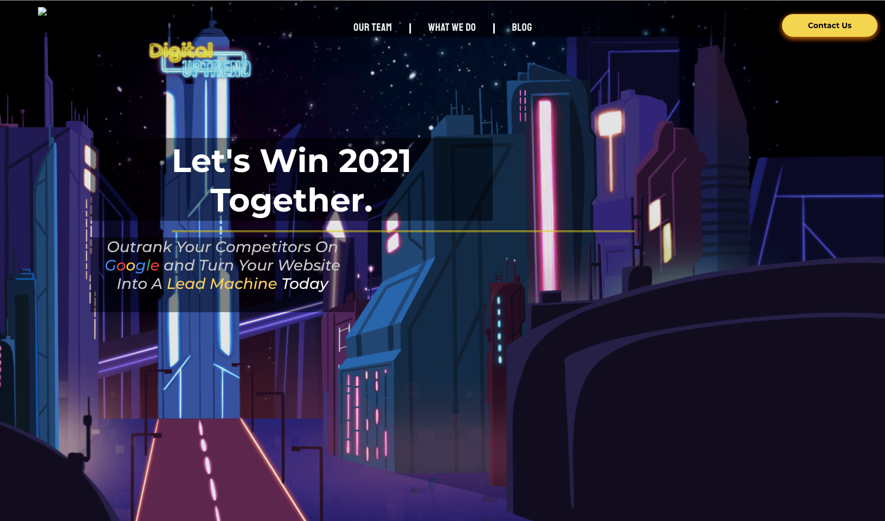
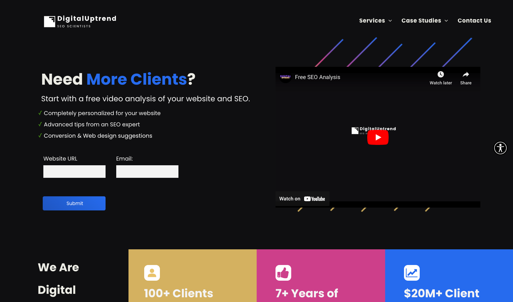

Digital Uptrend
Website Redesign
- Problem: Website was too generic. It needed a cohesive brand and visual overhaul.
- Process: Design Drafts, Redesign, Rebuild
- Solution: New website with new unique brand elements
Old Site
New Site
Digital Uptrend is a marketing and SEO agency. Their previous website had inconsistent brand messaging and imagery, including a prominent cartoon-style illustration that reduced their professionalism. To create a more modern and cutting-edge appearance, I redesigned the site with a style guide, documentation, and specific colors and fonts to be used. I utilized Duda (a website builder), along with custom CSS and JavaScript. I developed a dark mode theme for the website and reorganized the homepage and case studies pages to be more intuitive. The result was a new, stylish website with a smaller homepage and a more interactive and engaging user experience.
Process Refinement
- Problem: Websites were constantly being worked on without contextual information
- Process: Test and create new workflows
- Solution: Trello Kanban workflow
I worked at Digital Uptrend at a unique point of the company where it split into two. This meant that a lot of the organization and processes were being changed. I was able to help implement Trello boards to manage website edits, content writer work loads, and build a more collaborative environment.
Visit Site